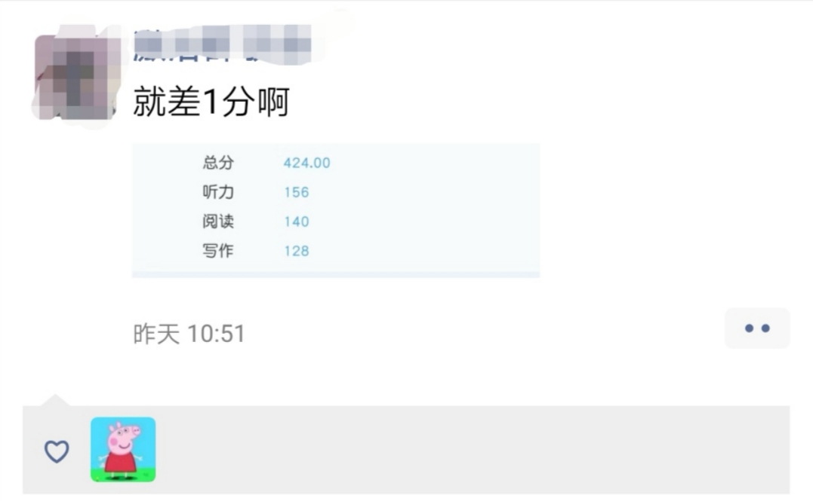
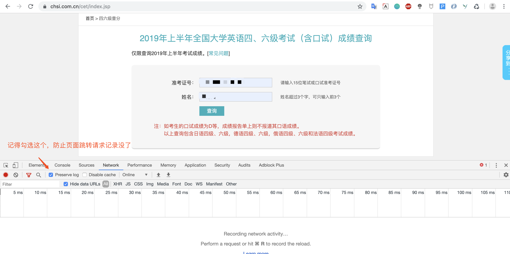
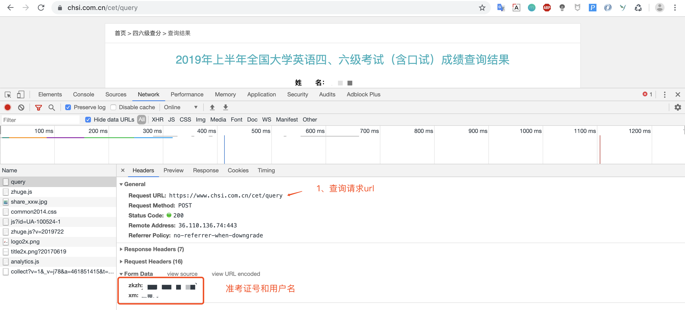
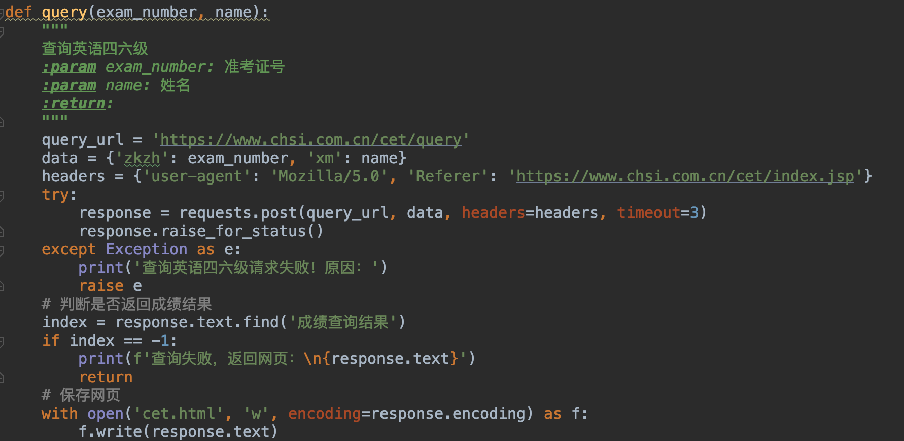
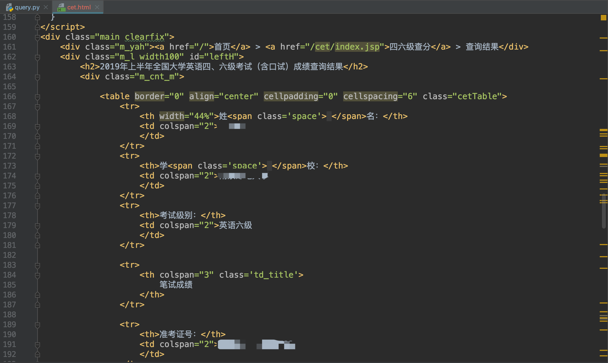
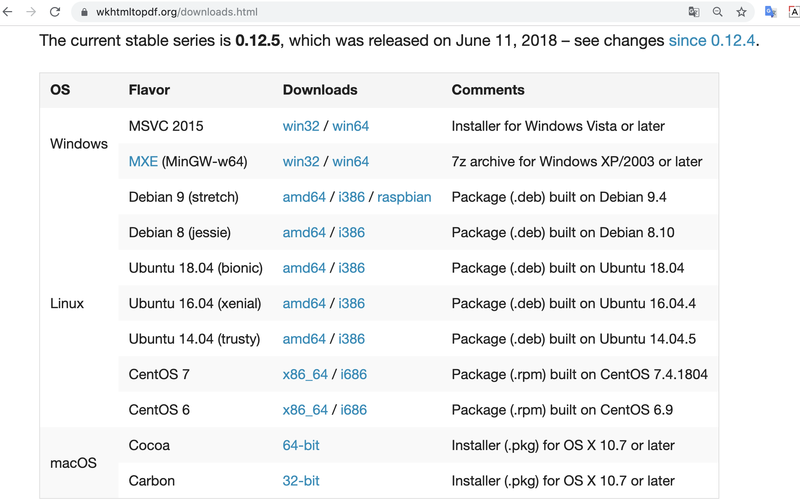
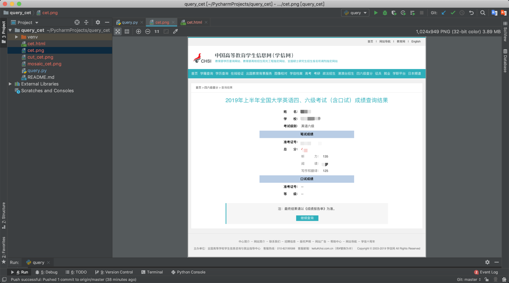
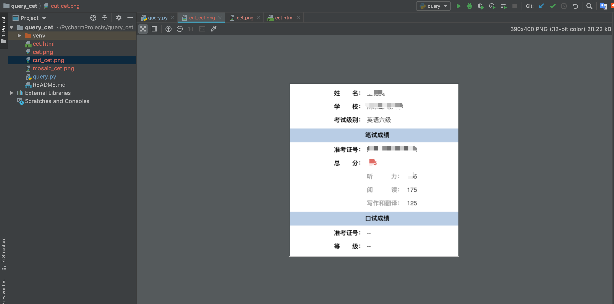
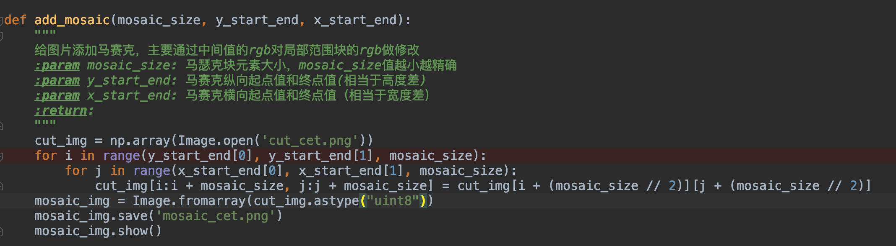

昨天有很多同学在朋友圈秀六级成绩
一个个都如(sang)此(jin)优(tian)秀(liang)
当然也有悲催的哥们

对于上面这位老弟
我只能说：骚呢，兄弟
这种事都能赶上，必须点赞
在刷朋友圈的时候，看到很多同学截图不规整啊（没错，猪哥处女座），有些准考证号还没打马赛克，于是猪哥就在想能不能用Python生个四六级成绩截图出来，最好还能自动打码，这样岂不是可以直接发朋友圈，装逼一步到位！（别人在秀成绩，你不光可以秀成绩，还可以秀Python）
很多同学会模仿别人代码，而自己却不知道去如何做一些小项目，其实问题就是在于：你不知从何下手！
作为开发人员在工作中都是接需求，所以自己做项目的第一步就是：搞清楚自己要做什么（功能），然后再去量化功能，分步实现！
接下来我们就来看看今天要做一个什么有趣的东西吧！
确定了要做的功能并量化细分完毕后，我们就可以开始敲代码实现了，这里就按照之前细分的步骤一步一步实现就好了！
首先我们需要找到四六级的查询入口，这里首选 学信网：https://www.chsi.com.cn/cet/index.jsp
然后我们调出调试窗口，输入准考证号和姓名。记得勾选左上角的Preserve log

然后我们就可以在Network看到第一个请求就是获取四六级结果的请求

拿到URL我们就可以开始使用requests库模拟请求啦，非常简单的一个post方法！

来看看返回的结果，是一个html网页！

这里我们会使用到一个软件：wkhtmltopdf，注意这是一个软件而不是python库，我们先要安装这个软件！
官网下载地址：https://wkhtmltopdf.org/downloads.html ，注意这个网站下载需要打开VPN，不然下载超级慢！
猪哥事先已经把他们都下载放在百度网盘里：wkhtmltopdf软件下载链接:https://pan.baidu.com/s/11VOomkNch7C9m8lqlRaNAg 密码:4xuv

下载后直接安装就可！
Windwos系统同学需要注意：需要把wkhtmltopdf的bin执行文件路径添加到PATH变量中。
Windwos系统同学需要注意：需要把wkhtmltopdf的bin执行文件路径添加到PATH变量中。
Windwos系统同学需要注意：需要把wkhtmltopdf的bin执行文件路径添加到PATH变量中。
软件下载完成后我们还需要一个Python库：imgkit。
也许会有同学问：为什么下载完软件还要下库？这两者有什么关系？这个库其实相当于软件的包装器，简单理解有了这个库我们就可以直接用代码调用软件，而不需要像平时那样需要自己去打开使用软件！
安装库：
pip install imgkit
将html转化为png图片，没看错就是只有一步！
imgkit.from_file('cet.html', 'cet.png')
注：关于imgkit库更多使用教程请看这里：https://pypi.org/project/imgkit/
我来看看看生成的图片是不是正常的，下图可以看到一个完成的网页截图就生成了！

用这个图片去发朋友圈别人可能会骂你sb，截个这么大的图浪费别人流量！
图片太大，我们想办法把图片截一下，只留下中间结果信息！
图像处理当然要使用我们经典的pillow库
安装：
pip install pillow
剪切图片三行代码搞定，这里我们将截好的图片保存为cut_cet.png
# 剪切图片
img = Image.open('cet.png')
cropped = img.crop((310, 300, 700, 700)) # (left, upper, right, lower)
cropped.save("cut_cet.png")看看截图后的效果，这样的图片才是一位合格的Python装逼工程师！

为什么猪哥会想要打码这个反男性的功能呢？原因在于猪哥这个测试账号也是从朋友圈看到的，所以告诫大家：一定要保护好自己的隐私，你永远不知道别人会那你的数据去干嘛！
好了回到代码中来，打码猪哥准备继续使用我们的pillow库，另外还需要一个常用库numpy库，这两个库会经常一起使用。因为图片由许多个像素构成，而每个像素由rgb数值构成，所以就可以把一张图片转变为一个多维数组，所以numpy库就经常用到！
打码的原理就在于将需要打码区域的像素rgb值修改
我们来看看打码的技术实现，猪哥将打码的代码封装为一个方法，这是通用的，你可以用在其他地方！

这里只需要转入马赛克的大小和需要打码的坐标点就可以，我们来看看最终效果！
上图红色部分是猪哥后来画的，可以看到 准考证号已经被猪哥用Python画上邪恶的马赛克！
今天的案例虽然简单，但是却让我们看到了Python的可玩性，将技术应用于生活，装逼就可以无处不在！
获取源码：关注微信公众号「裸睡的猪」 回复： 四六级查询